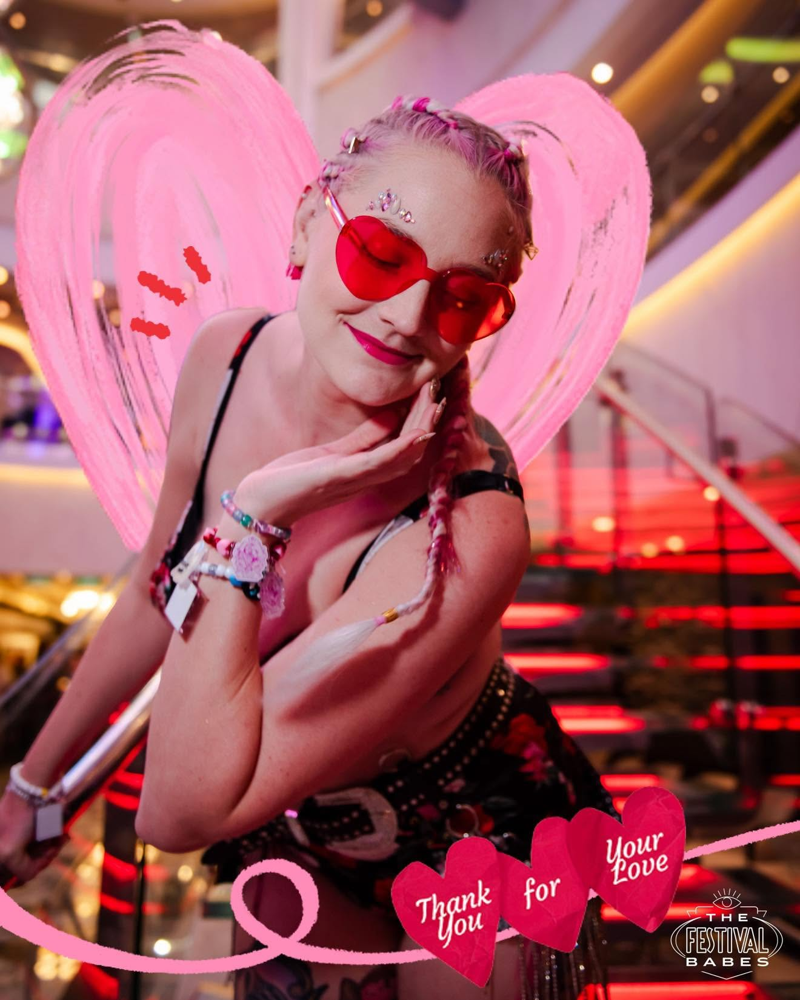

About the artist
Color, character,
and a little sparkle.
I create bright neo-traditional tattoos with strong silhouettes, rich color, and enough detail to keep revealing something new.
Book ↗
About the workThe Plastic
The Plastic
Flamingo energy.
I’m drawn to rich color, ornate details, and tattoos that can hold their own from across the room. My favorite ingredients are dimensional flowers, berries, celestial symbols, flamingos, moths, and hearts with a little drama.
- Bold neo-traditional outlines
- Pink, teal, purple, blue, orange, and gold
- Florals, botanicals, berries, moths, and birds
- Celestial, magical, and ornamental details
My approachMore than pretty.
More than pretty.
Always memorable.
Every piece is designed to feel like it belongs to the person wearing it — with enough color, movement, and detail to become a favorite part of the collection.